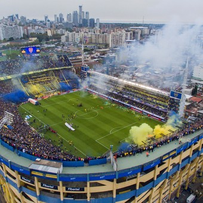

La imponente estructura yace en la Ciudad de Buenos Aires, más precisamente en el barrio de La Boca, entre las calles Brandsen, Del Valle Iberlucea, Aristóbulo del Valle y las vías del Ferrocarril Roca. Tiene una capacidad cercana a los 55 mil espectadores y en la actualidad se analizan dos proyectos para poder ampliarla de una vez por todas. La gran limitación son las propiedades ubicadas en las dos medias manzanas que están detrás de los palcos. Una novela de nunca acabar.
La historia de La Bombonera comenzó mucho antes del 25 de Mayo de 1940, día de su inauguración. Después de haber tenido otros estadios, y de deambular por diferentes zonas, en 1922 el club alquiló los mismos terrenos que ocupa hoy en día y que recién se adquirieron en 1931. Los trabajos para contar con un campo de juego y tribunas de madera finalizaron en 1924. Algunos de esos tablones hoy forman parte de la cancha de Ferro, donde el Xeneize hizo de local mientras edificaba su nueva y definitiva casa.
El arquitecto esloveno Victor Sulcic junto a sus socios, Raúl Bes y José Luis Delpini, fueron los encargados en 1934 de diseñar el estadio. Ya le habían dado forma al famoso Mercado de Abasto de Buenos Aires, proyecto que impresionó y obtuvo muchos premios. El desafío en esta oportunidad era adaptarse al escaso espacio físico disponible. Las obras comenzaron el 6 de agosto de 1938 y se prolongaron durante dos años. Para Boca no fue nada sencillo hacer frente a los gastos de construcción.
El presidente del club en aquel entonces, Camilo Cichero, sacó una hipoteca sobre su propia casa para poder contar con los fondos necesarios. Como no alcanzó, tuvo que pedirle un préstamo al Estado: el máximo mandatario argentino, Agustín P. Justo, se lo otorgó con la condición de que su yerno lo sucediera en el cargo. Fue así como Eduardo Sánchez Terrero comandó los destinos de la entidad de La Ribera a partir de 1939 y fue justamente durante su gobierno que se inauguró La Bombonera. Sin embargo, tuvo el gesto de permitirle a su antecesor dar el puntapié inicial en ese amistoso frente a San Lorenzo.
El sábado 25 de Mayo de 1940 comenzó la historia de uno de los estadios más emblemáticos del mundo. El encuentro con victoria 2-0 frente al Ciclón fue la excusa para una fiesta inolvidable. Todavía no estaba edificada la tercera bandeja ni la hoy denominada Natalio Pescia, la segunda que se encuentra detrás del arco que mira hacia el Complejo Pedro Pompilio y que fue construida al año siguiente. En 1951 se iniciaron las obras que completaron la estructura tal como se las conoce en la actualidad y se realizaron las instalaciones de luz artificial. El trabajo quedó concluido en 1953.
Así la bautizó Sulcic, a raíz de una caja de bombones que recibió como regalo y que tenía la misma forma de su proyecto. El bosquejo original preveía tribunas en los cuatro costados, pero las escasas dimensiones obligaron a mutar el diseño para elaborar una especie de “D”. De allí también se explica la famosa acústica, además de la sensación de cercanía que existe con el público por haber tenido que optimizar el espacio y levantar las bandejas con una pendiente muy marcada.
